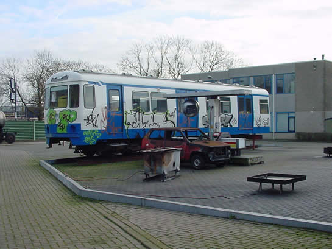

retmetro.nl bezoekt metrorijtuig 5110
- zaterdag 15 januari 2011 15:49
- Geschreven door Tristan
Afgelopen vrijdag heeft het team van retmetro.nl een bezoek gebracht aan MG2-rijtuig 5110. Dit rijtuig, dat nog uit één A-bak en twee draaistellen bestaat, wordt gebruikt voor brandbestrijdings- en ontruimingsoefeningen. Het rijtuig is in de kleuren van het Amsterdamse vervoerbedrijf GVB geschilderd, maar is van de binnenzijde nog nagenoeg in authentieke staat. Ook aan de bestuurderscabine van het rijtuig is weinig veranderd.

Het metrorijtuig is ondergebracht bij een bedrijf dat hulpverleningsopleidingen geeft. Er is een stuk spoor aanwezig met derderail.
Het metrorijtuig is, vanwege de beperkte manoeuvreermogelijkheden in de straat, met twee kranen naar binnen gehesen. Hierbij werd eerst het draaistel onder de geleding ingespoord, waarna de rijtuigbak onder een hoek naar binnen werd getakeld.

Het rijtuig staat veilig binnen. De deuren kunnen aangesloten worden op perslucht, waardoor ze werkend te krijgen zijn.

De stuurtafel van metrorijtuig 5110 verkeert nog in de oorspronkelijke staat.
De metrorijtuigen uit de 5100-serie verschillen op een aantal punten met de metrorijtuigen uit de 5000-serie. In de bestuurderscabine van metrorijtuig 5110 bijvoorbeeld is er een elektrische ruitenwisser met interval en verschillende snelheden. De 5024 heeft een pneumatische ruitenwisser met één snelheid. Daarnaast verschillen sommige knoppen op de stuurtafel.

Bestuurderscabine van metrorijtuig 5024. In het midden van deze stuurtafel zijn tellertjes te zien die bijhielden hoevaak de knoppen 'Permissief' en 'Deblokkeren' werden bediend. Deze tellertjes zijn bij de latere series weggelaten.

Ook het interieur van metrorijtuig 5110 is vrijwel ongewijzigd. Er zijn hier en daar enkele stickers uit de Amsterdamse metro aangebracht.
Het interieur van de 5110, de derde MG2-serie, verschilt op een aantal punten met het interieur van de 5024, de eerste serie. Zo zijn er bijvoorbeeld bij de 5110 twee rijen ventilatieroosters, andere klapramen en de deurkoven zijn scharnierend opgehangen.

Het interieur van de A-bak van metrorijtuig 5110. De geleding is afgesloten met een houten schot.

Zo zag het interieur van metrorijtuig 5024 eruit voordat dit door de werkgroep Metro van stichting RoMeO onderhanden werd genomen.

En zo zag het er na een opknapbeurt uit.
De B-bak van metrorijtuig 5110 is na het schilderen in de GVB-kleurstelling gesplitst van de A-bak. De B-bak heeft een tijd als oefenobject voor brandbestrijding in Utrecht gestaan.

Op een foto van Bing Maps is de B-bak nog te zien.

De B-bak op het terrein van het voormalige Stator bedrijfshulpverlening in Utrecht, archieffoto. Deze bak is vermoedelijk afgevoerd.
